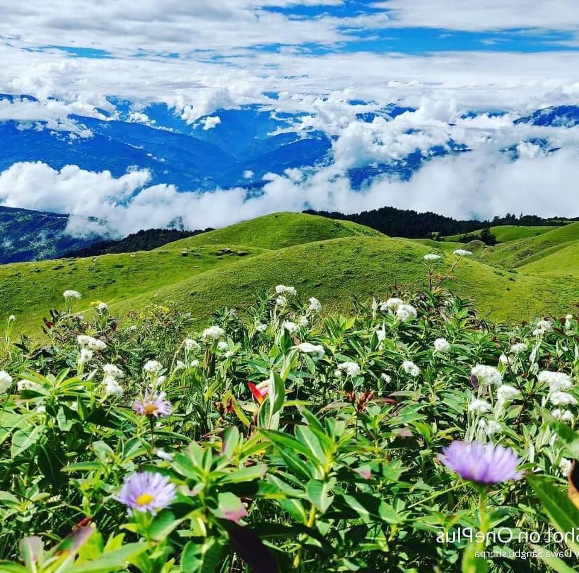
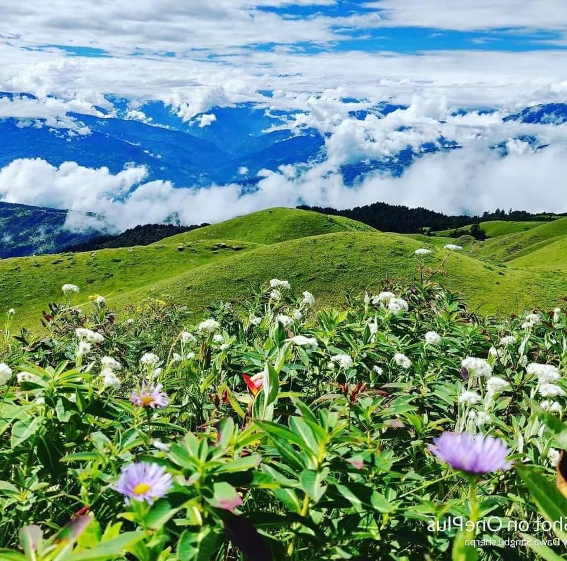
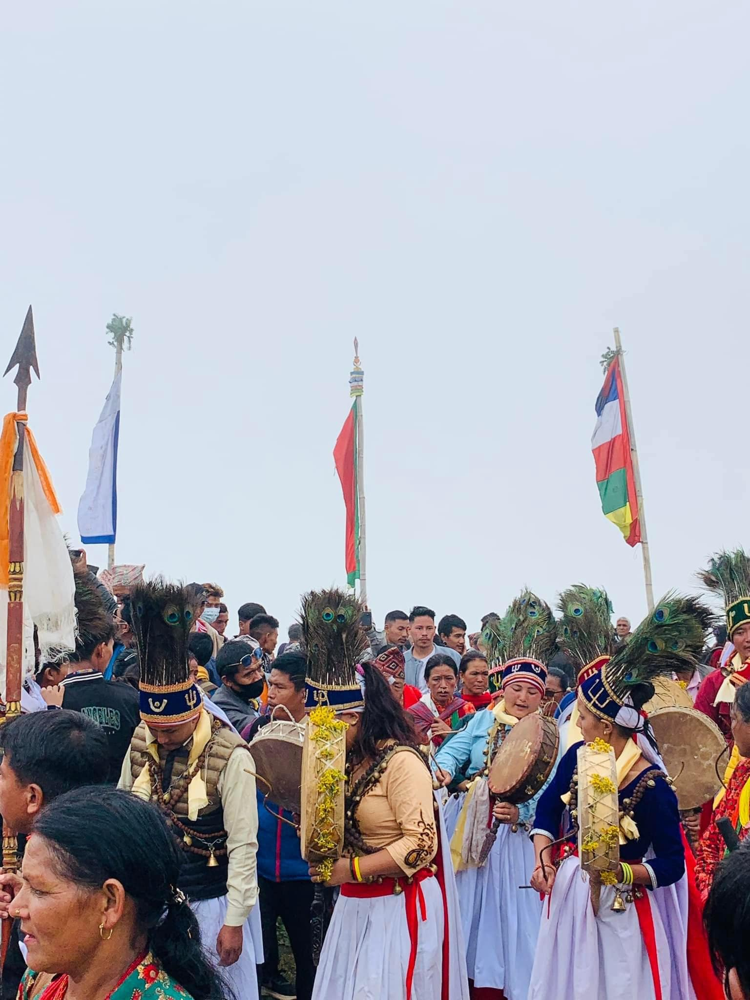
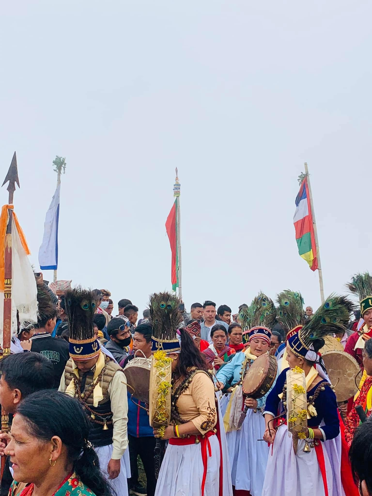

“Sai”, literally ” hundred” and “Lung”, literally “hill”, combined as “Sailung”, meaning “hundred hills” or “Land of Hundred Hills”, borders two districts Ramechhap and Dolakha in the Province Bagmati, nearly in Central Nepal. Though it borders Dolakha, it lies in Ramechhap. Sailung is a well-known trekking destination because of its indigeneous trails, picturesque landscape and tempting views that attract trekkers. There is a folk song sung by Kunti Moktan, a veteran Nepali singer, “mathi mathi sailungema chouri dulaunelai, hatkelama mayako gurans fulaunelai”, meaning that there are shepherds grazing cows and yaks in Sailing hills and offer and spread to people, visitors, ,lovers and beloveds their hearty and pure love which is as soft as the tender petals of rhododendron flowers.
The topmost elevation of Sailung is 3146 metres. One thing more striking and remarkable than other trekking experiences associated with Sailung is that it grandly offers you the opportunity of enjoying the rare scenes of nearly ninety percent of the Himalaya Range in Nepal- Dhaulagiri,Annapurna, Langtang, Ganesh Himal, Rolwaling Range. Moving round the land of the hundred hills, that is Sailung, is like getting into the realm of beauty itself. The treasury of this trek is so vivid and romantic that Sailung has, for you in store, manifold gifts in different seasons. In winter, it is entirely enveloped in snow, and from mid-winter through spring you will be warmly welcome by red, red rhododrendons, as poetic metaphors of the Scottish poet Robert Burns describing his beloved, ” My love is like a red red rose, Newly sprung in June”. During the rest of the time, Sailung enriches itself with green pastures that enter into your memories for good.
One more remarkable thing about Sailung is that there is a temple called “Sailungeshwar Mahadev” , an incarnation of Lord Shiva, the supreme godly power as described in Hindu religion and mythology. You can get to the destination of Sailung by means of motor way from Kathmandu via Mudhe in the district of Dolakha then to the place called Dhunge, that is “stoney”. From Dhunge, you need to go hiking up to Sailung hills. The distance from Mudhe to Dhunge is merely about 27 kilometers. So you may expect to reach there within one or half an hour. But this would surely be a mistaken judgement because it takes you 2 to 3 hours to get there owing to the dilapidated road. If you choose to spend a night there in Dhunge, you will find homely small local hotels, which offer you simple local food and receive you with unembellished purity of beautiful and natural smiles and warmth of love, care and dignity. You may also choose to travel by motorcycle, especially if it is not snowy and rainy.

 

 
